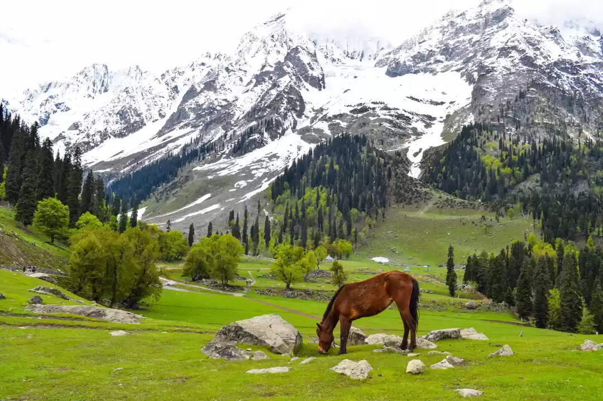

Tourist Places
"Explore the World, Create Memories."

Kashmir, often referred to as "Paradise. Nestled in the northern part of India, it is renowned for its stunning landscapes, from snow-capped mountains and verdant valleys to pristine lakes and lush meadows. The Dal Lake, with its iconic houseboats and shikaras, offers a serene and picturesque setting, reflecting the surrounding mountains like a mirror. The Mughal Gardens, with their meticulously designed terraces and vibrant flowers, showcase the region's rich history and artistry.In winter, Kashmir transforms into a wonderland, with places like Gulmarg offering some of the best skiing experiences in the country. The enchanting beauty of the saffron fields, the sound of gushing rivers, and the fragrance of blooming tulips in spring add to its allure. The warmth and hospitality of the Kashmiri people, combined with their rich cultural heritage, make visiting Kashmir a truly unforgettable experience. Whether you seek adventure, tranquility, or a glimpse into a uniqun winter, Kashmir transforms into a wonderland, with places like Gulmarg offering some of the best skiing experiences in the country. The enchanting beauty of the saffron fields, the sound of gushing rivers, and the fragrance of blooming tulips in spring add to its allure. The warmth and hospitality of the Kashmiri people, combined with their rich cultural heritage, Kashmir promises a journey that will linger in your heart forever.

Himachal Pradesh, often called "The Land of Gods," is a haven of natural beauty and serene landscapes. Nestled in the lap of the majestic Himalayas, this northern Indian state is a treasure trove of picturesque valleys, lush green forests, and sparkling rivers. The tranquil hill stations of Shimla, Manali, and Dharamshala offer a perfect blend of adventure and relaxation, attracting tourists from all over the world.Shimla, the capital, with its colonial architecture and bustling Mall Road, exudes an old-world charm, while Manali's snow-covered peaks and dense pine forests make it a paradise for adventure enthusiasts. The Rohtang Pass, with its breathtaking views, and the Solang Valley, famous for paragliding and skiing, add to the thrill. Dharamshala, home to the Dalai Lama, provides a unique spiritual experience with its serene monasteries and Tibetan culture.
.jpg)
Munnar is renowned for its sprawling tea plantations, rolling hills, misty landscapes, and serene environment. The cool climate and lush greenery make it a popular destination for tourists seeking a tranquil retreat. Visitors can explore the tea gardens, visit the tea museums to learn about the history and process of tea production, and enjoy the scenic beauty of the region.
The area is also home to several wildlife sanctuaries and national parks, such as Eravikulam National Park, which is famous for the endangered Nilgiri Tahr, a mountain goat unique to this region. Anamudi, the highest peak in South India, is located within this park and offers opportunities for trekking and wildlife spotting.
Munnar also boasts beautiful viewpoints like Top Station and Echo Point, which provide panoramic views of the surrounding valleys and hills. The picturesque Mattupetty Dam and Lake, Kundala Lake, and Attukal Waterfalls are other popular attractions in Munnar.